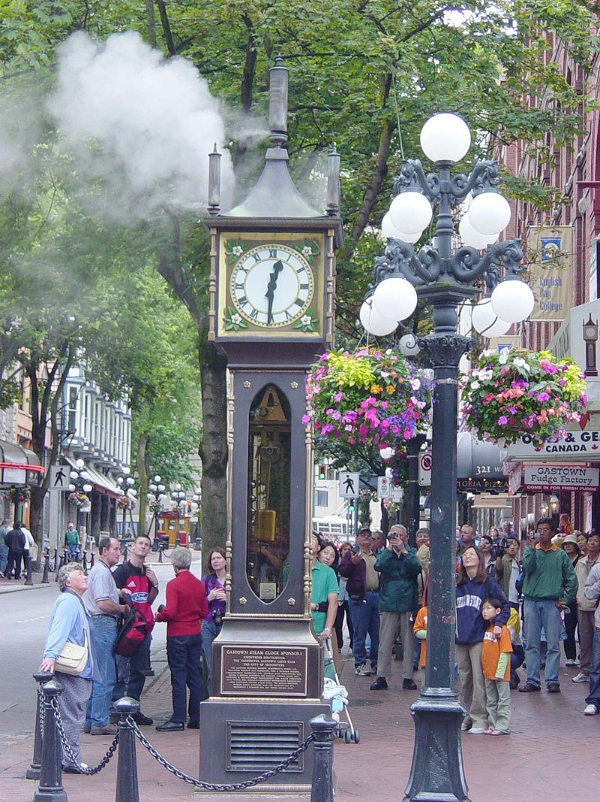
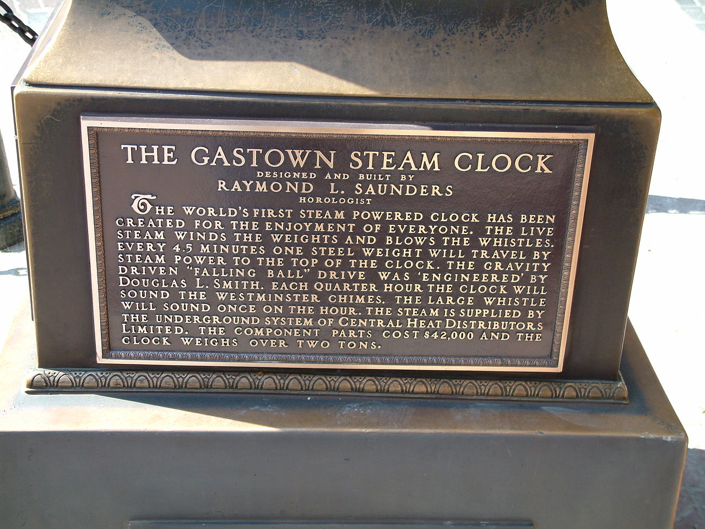
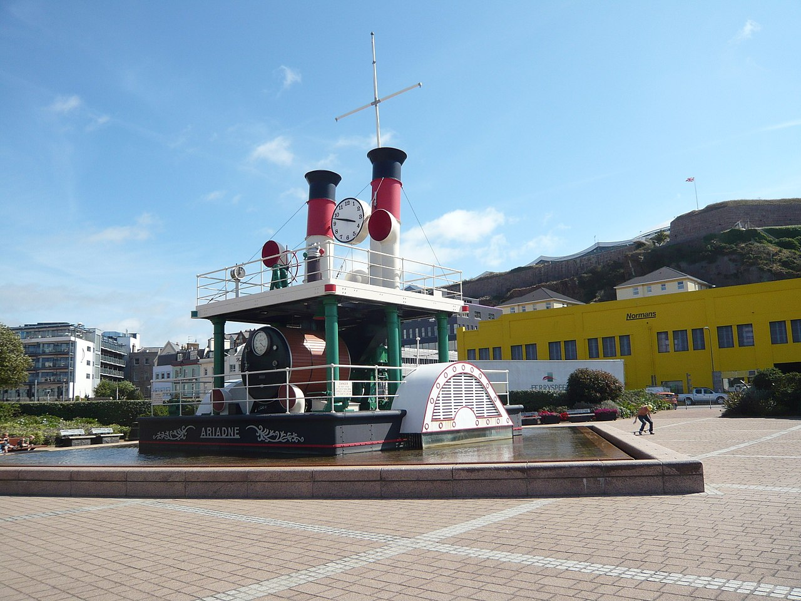

|

⚜
Steam clock ⚜
A steam clock is a clock which is fully or partially powered by a steam engine. Only a few functioning steam clocks exist, most designed and built by Canadian horologist Raymond Saunders for display in urban public spaces. Steam clocks built by Saunders are located in Otaru, Japan; Indianapolis, United States; and the Canadian cities of Vancouver, Whistler and Port Coquitlam, all in British Columbia. Steam clocks by other makers are installed in St Helier, Jersey and at the Chelsea Farmers' Market in London, England.
Although they are often styled to appear as 19th-century antiques, steam clocks are a more recent phenomenon inspired by the Gastown steam clock built by Saunders in 1977. One exception is the steam clock built in the 19th century by Birmingham engineer John Inshaw to demonstrate the versatility of steam power.
⚜
Steam Clock Tavern
In 1859, the engineer and businessman John Inshaw took over the public house on the corner of Morville Street and Sherborne Street in Ladywood, Birmingham, UK. In a bid to make the establishment a talking point in the area, as well as furnishing it with various working models, Inshaw applied his interest in steam power to construct a steam-powered clock as a feature. A small boiler made steam; the steam condensed into droplets of water that fell on a plate at regular intervals, and the plate then drove the mechanism. The clock was installed above the door, and the pub became known as the Steam Clock Tavern. The establishment was sufficiently successful that it became a music hall in the 1880s.
⚜
Gastown steam clock
Raymond Saunders' first steam clock was built in 1977 at the corner of Cambie and Water streets in Vancouver's Gastown neighbourhood. Although the clock is now owned by the City of Vancouver, funding for the project, estimated to be about $C58,000, was provided by contributions from local merchants, property owners, and private donors. Incorporating a steam engine and electric motors, the clock displays the time on four faces and announces the quarter hours with a whistle chime that plays the Westminster Quarters. The clock produces a puff of steam from its top on the hour. The clock is featured on the cover for the 2011 Nickelback album Here and Now.
The steam engine that originally ran the clock is a Stuart #4 single expansion double acting 1" piston engine. This engine is still visible through the glass sides of the clock. However, owing to the clock's high noise levels and inability to keep accurate time, since 1986 the clock has been powered by an electric motor that was originally intended solely as a back-up system.
⚜
Other steam clocks
Indiana State Museum steam clock
The 17–foot–tall Indiana State Museum steam clock in Indianapolis, Indiana is located on the sidewalk on the north side of the museum near the canal. It has four 24" diameter dials that are back-lit by neon. The clock’s eight brass whistles play a few notes of "Back Home Again in Indiana" every 15 minutes. A more complete rendition is played at the top of every hour.
Chelsea Farmers' Market steam clock
The towering and quirky steam clock located at the Chelsea Farmers' Market was constructed in 1984. Although still standing, the clock is no longer in operation.
Jersey waterfront steamboat clock
The Jersey steam clock is a full-scale replica of the centre section of a paddle steamboat named the Ariadne. The clock was commissioned by the Jersey Waterfront Board in 1996, and built by Smith of Derby Group. Although once powered by steam, according to a Jersey government document "the steam workings have been replaced with electrical fittings designed to provide the same functionality including the blowing of 'steam' at the appropriate times of the day."
The clock is sited on the North Quay of the harbour at St Helier, Jersey, and also incorporates a fountain. It is listed in the Guinness Book of Records as the World's largest steam clock.
Berwick steam clock
Located at Berwick, Australia. Designed and built by Peter Weare at his own expense, it is a half scale prototype for a larger clock proposed for Melbourne Australia. The clock was dismantled in December 2010 due to vandalism. In December 2011, the City Council agreed to find a new site for the clock.
⚜
Gallery
|
|
|
Tourists are entertained by the Gastown steam clock in Vancouver
|
|

|
|
Front plaque on Vancouver Gastown steam clock
|
|

|
|
Jersey Steam Clock
|
|
|